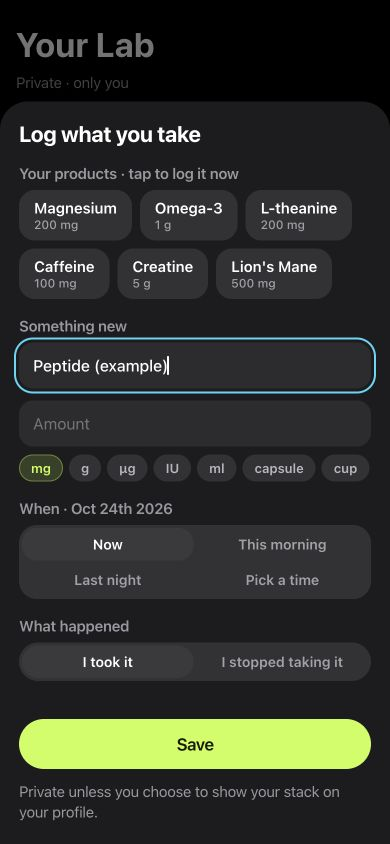

Inside LabRats
A custom name in the actual log form.
This screenshot shows “Peptide (example)” typed into the real product field. The amount is empty and no entry was saved.
The example demonstrates the journal’s custom-name workflow. It does not show a built-in peptide catalogue, a dose calculation or an observed treatment effect.
How to add a peptide entry
- Open Lab → Add to your day → Supplement.
- Type your own peptide name into the custom product field.
- Record the amount, unit, time and what happened.
- Save the entry, then revisit the date in your Journal.
The same record can include a nootropic log and a supplement journal when those are part of your own history.
What can you record in a peptide journal?
The custom product field accepts the name you choose. Amount and unit fields preserve what you enter, while time controls let you describe when the event happened. I took it and I stopped taking it identify different entries.
The Journal also keeps your own daily notes, tags and measurements. Record facts you can revisit rather than expecting one product entry to explain everything about the day.
Keep the log and the task result connected
Peptide tracking can be part of a broader personal record. In LabRats, you can play a reaction, memory or attention game and save that task result separately from your product entry. The result retains the meaning of its task: response time, correct answers or another named measurement.
A quicker game run is an observation of play under those conditions. It cannot establish that the logged peptide caused the change, or show that a substance is safe.
For the task side of that record, see reaction-time tracking, memory tests and attention games.
What makes a useful day-by-day record?
- A consistent name for the entry you want to find later.
- The amount, unit and time you actually recorded.
- Notes about sleep, interruptions and other changes.
- The same selected task formats across the days you compare.
- Missing entries kept visible as missing information.
Keep the amount as an entered record. LabRats focuses on journaling, task results and personal comparisons; it does not calculate a dose or choose a peptide protocol.
Use a planned comparison only when it fits the question
The personal experiment tools let you select games, review a phase order and set a schedule. A saved log entry and an experimental plan remain different things: write down changes to the plan and what happened on each day.
A journal or before-and-after record is not automatically a controlled N-of-1 trial. Practice, expectations, changing conditions and missing observations can limit its interpretation. Keep treatment and safety decisions with an appropriate professional.
The personal experiment guide shows the setup and explains what a comparison can support.
Your record and sharing choices
The Journal and core local play can be used without an account. The app labels daily notes as local-only; other records have their own sync and sharing controls. Read the privacy settings for the records you choose to keep.
Use the privacy policy and measurement method to understand those boundaries before sharing a personal comparison.